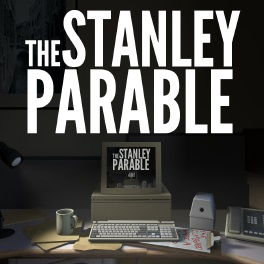

The Stanley Parable
The Stanley Parable is a game from 2013 that was a heavy inspiration for The Illusion of Choice. It has similar mechanics as a choose your own adventure game that starts off with choosing between two doors, and also carries a lighthearted aesthetic that adds an eerie feeling to it all as the game progresses. The game also includes a narrator that gives you directions for what to do next, and it is up to the player whether to follow them, or to carve your own path.
Berserk

Berserk is a long running manga series written by Kentaro Miura. Among many other themes, the series addresses whether humanity has any power or control over their own will, or if our actions are preordained or controlled by some greater power or entity. The series asks the question whether mankind has control over their own will, or if we have the power to fight against it and rise above our destiny.
Haircut
Haircut is an "interactive adventure song" that was my first experience with a choose your own adventure game, and was what originally inspired me to make a game of the same genre. Created by Neil Cicierega on Youtube, it is a song that you choose where the story of it goes at the end of each clip, with multiple endings and branching choices, it is such an expansive end enjoyable experience for something with such simple mechanics.